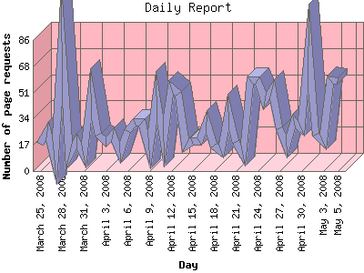

Analog 5.31
Analog 5.31 Report Magic 2.16
Report Magic 2.16The Daily Report identifies the activity for each day within the reporting period. Remember that one page hit can result in several server requests as the images for each page are loaded.

| Day | Number of page requests | Percentage of the bytes | |
|---|---|---|---|
| 1. | March 25, 2008 | 18 | 0.35% |
| 2. | March 26, 2008 | 26 | 2.17% |
| 3. | March 27, 2008 | 7 | 0.01% |
| 4. | March 28, 2008 | 85 | 0.34% |
| 5. | March 29, 2008 | 10 | 0.01% |
| 6. | March 30, 2008 | 20 | 0.22% |
| 7. | March 31, 2008 | 10 | 0.02% |
| 8. | April 1, 2008 | 51 | 0.09% |
| 9. | April 2, 2008 | 24 | 0.50% |
| 10. | April 3, 2008 | 19 | 0.02% |
| 11. | April 4, 2008 | 24 | 0.35% |
| 12. | April 5, 2008 | 12 | 0.01% |
| 13. | April 6, 2008 | 26 | 0.04% |
| 14. | April 7, 2008 | 32 | 0.38% |
| 15. | April 8, 2008 | 32 | 1.09% |
| 16. | April 9, 2008 | 14 | 0.30% |
| 17. | April 10, 2008 | 49 | 1.00% |
| 18. | April 11, 2008 | 19 | 0.46% |
| 19. | April 12, 2008 | 55 | 0.35% |
| 20. | April 13, 2008 | 51 | 0.29% |
| 21. | April 14, 2008 | 17 | 0.24% |
| 22. | April 15, 2008 | 20 | 0.02% |
| 23. | April 16, 2008 | 20 | 0.23% |
| 24. | April 17, 2008 | 32 | 0.24% |
| 25. | April 18, 2008 | 17 | 0.67% |
| 26. | April 19, 2008 | 13 | 0.01% |
| 27. | April 20, 2008 | 39 | 0.07% |
| 28. | April 21, 2008 | 19 | 0.58% |
| 29. | April 22, 2008 | 11 | 0.16% |
| 30. | April 23, 2008 | 60 | 0.86% |
| 31. | April 24, 2008 | 60 | 0.12% |
| 32. | April 25, 2008 | 46 | 0.07% |
| 33. | April 26, 2008 | 54 | 0.46% |
| 34. | April 27, 2008 | 28 | 0.05% |
| 35. | April 28, 2008 | 16 | 0.58% |
| 36. | April 29, 2008 | 33 | 0.03% |
| 37. | April 30, 2008 | 28 | 0.25% |
| 38. | May 1, 2008 | 82 | 0.10% |
| 39. | May 2, 2008 | 24 | 0.17% |
| 40. | May 3, 2008 | 19 | 0.14% |
| 41. | May 4, 2008 | 60 | 0.22% |
| 42. | May 5, 2008 | 59 | 0.58% |
Most active day December 13, 2007 : 112 pages sent.
Daily average: 31 pages sent.
This report was generated on May 6, 2008 05:30.
Report time frame July 18, 2007 21:56 to May 5, 2008 23:59.
| Web statistics report produced by: | |
| Analog 5.31 | Report Magic 2.16 |